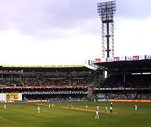
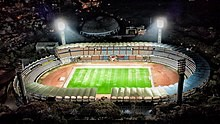
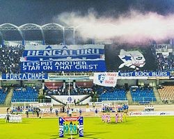

Sports:-
  
Cricket is the most popular sport in the city. Bangalore's many parks and gardens allow for important games. Many national cricketers
have come from Bangalore, including former captains Rahul Dravid and Anil Kumble. Some other notable Bangaloreans who have
represented India include Gundappa Viswanath, Syed Kirmani, E. A. S. Prasanna, B. S. Chandrasekhar, Roger Binny, Venkatesh
Prasad, Sunil Joshi, Robin Uthappa, Vinay Kumar, KL Rahul, Karun Nair, Mayank Agarwal, Brijesh Patel and Stuart Binny.
Bangalore's international cricket stadium is the M. Chinnaswamy Stadium, which has a seating capacity of 40,000
and has hosted matches during the 1987 Cricket World Cup, 1996 Cricket World Cup and the 2011 Cricket World Cup.
The Chinnaswamy Stadium is the home of India's National Cricket Academy and the Indian Premier League franchise
Royal Challengers Bangalore.
Bangalore's
Kanteerava Indoor Stadium hosted the
SABA Championship in 2015 and 2016. India's national basketball team
won the gold medal on both occasions. Bangalore is home to the Bengaluru Beast—the 2017 vice-champion of India's top
professional basketball division, the UBA Pro Basketball League.The Kanteerava Indoor Stadium and Sheraton Grand has hosted
various kabaddi matches, including the entire Pro Kabaddi League Season 8. The
Bengaluru Bulls is one of the teams in this
league.